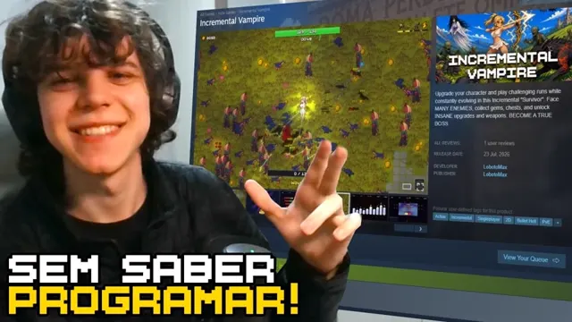
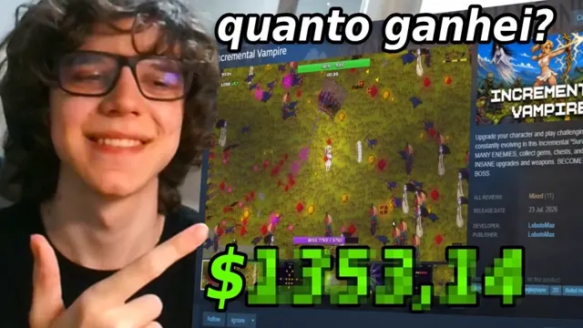
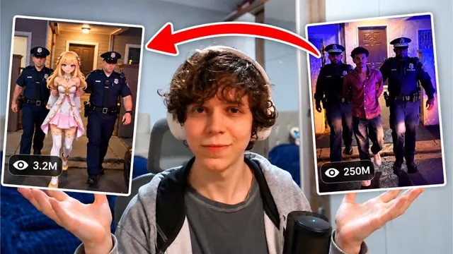

Canal “ignore não existe mais”
- inscritos
- 25,5 mil
- vídeos
- 355
- visualizações
- 879 mil
Onde eu “vibecodo”: construo jogos, ferramentas e experimentos com IA em vídeo, mostrando o que deu certo e o que deu errado.
-

Criei um jogo em 7 dias e lancei ele na Steam -

Meu jogo feito em 7 dias deu lucro? Mostrando os números da Steam -

Transformei vídeos virais em anúncios do meu jogo com IA